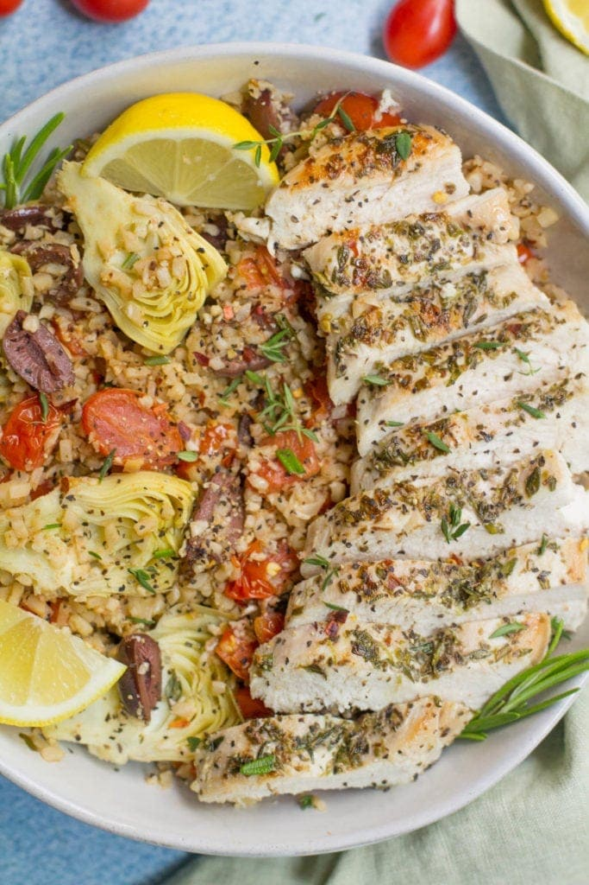

Greek Chicken Cauliflower Rice Bowls

Description
Do you want something healthy light and filling but not your plain old normal pasta and siple dishes? Do you want something that is actually
pretty easy to make within about 30 minutes? Well your in luck! Introducing this Greek Chicken Cauliflower bowls recipes which is packed
with very healthy ingredients and refreshing flavors! It is so good that you'll wonder soon "why the heck didn't I try to make this sooner?"
Ingredients
chicken breasts
kalamata olives
artichoke hearts in water
cherry tomatoes
fresh rosemary
fresh thyme
salt
pepper
dried oregano
olive oil
cauliflower rice
Note: This recipes can be mix and matched with different ingrdients such as mushrooms for artichoke hearts or different olives can kalamata olives.
Steps
- Heat olive oil in a large pan on the stove. Season chicken with 1 tsp of fresh thyme, 1 tsp fresh rosemary, 1/2 tsp oregano, 1/2 tsp pepper, and 1/2 tsp salt
- Once oil is hot, place chicken in the pan. Sear chicken in olive oil for 6-7 minutes on each side until golden brown.
- Once chicken is cooked, remove from pan + set aside. Keep oil in pan. Add in cherry tomatoes to the hot oil that is already in the pan.
- Sauté the tomatoes for 5-6 minutes until soft. Add in 3 cups cauliflower rice, artichoke hearts, olives + remaining spices. Stir to combine. Sauté for 3-4 minutes on low heat until cauliflower rice begins to soften.
- Remove cauliflower rice from pan + add to bowls. Slice chicken and add to the top.
- Enjoy!!!! :D
Home